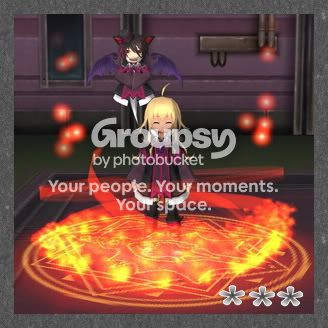

[Full IRIS] Nekomata (Dark) [อยู่ในช่วงปรังปรุงค่ะ]
[Full IRIS] Nekomata(Dark)
...........................................
เงื่อนไขในการเริ่ม Event :
1. Nekomata ทุกตัว Momo / AI / Yamabuki / Sumire / Akane / Sora / Anzu / KurumiWakana / New Midori / Angel
*สำหรับ Nekomata (Angel) จะต้องได้มาจากการทำเควสด้วยตัวละครตัว เดียวกัน กับ ที่ จะเริ่ม event Nekomata (Dark)
2. ใส่ Nekomata Previous Midori ในขณะที่เริ่ม event จนจบ

...........................................
เงื่อนไขในการเริ่ม Event :
1. Nekomata ทุกตัว Momo / AI / Yamabuki / Sumire / Akane / Sora / Anzu / KurumiWakana / New Midori / Angel
*สำหรับ Nekomata (Angel) จะต้องได้มาจากการทำเควสด้วยตัวละครตัว เดียวกัน กับ ที่ จะเริ่ม event Nekomata (Dark)
2. ใส่ Nekomata Previous Midori ในขณะที่เริ่ม event จนจบ